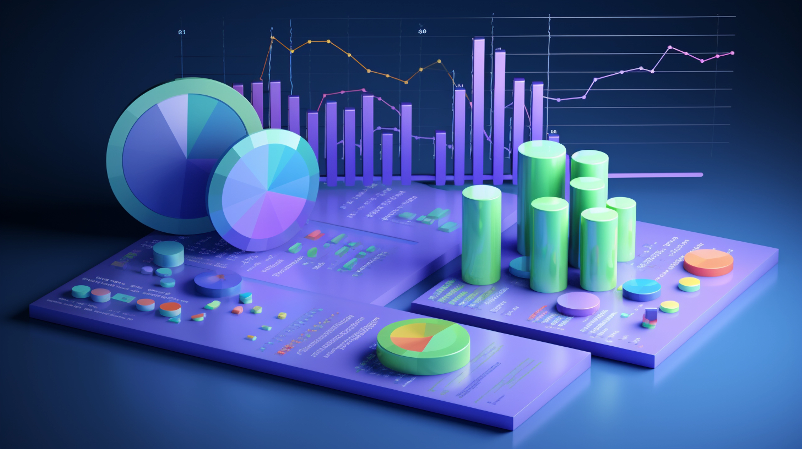

Learn More About Data Analysis

The Power of Data Analysis
Data analysis is the process of examining, cleaning, transforming, and interpreting data to extract meaningful insights, identify patterns, and make informed decisions. In today's data-driven world, data analysis plays a crucial role across industries, from business intelligence and marketing strategies to scientific research and healthcare innovations. Let's delve into the realm of data analysis and explore its methodologies, tools, and applications.
Understanding Data Analysis
Data analysis involves several key steps and methodologies that enable organizations and individuals to derive actionable insights from raw data:
- Data Collection: Gathering data from various sources such as databases, surveys, sensors, social media platforms, and web analytics tools.
- Data Cleaning: Preprocessing and cleaning data to remove errors, inconsistencies, missing values, and outliers that could affect the accuracy of analysis.
- Data Transformation:: Structuring and organizing data into a format suitable for analysis, including data normalization, aggregation, and feature engineering.
- Machine Learning: Utilizing machine learning algorithms for predictive modeling, clustering, classification, and anomaly detection to uncover hidden insights and make data-driven predictions..
- Data Visualization: Creating interactive and informative visualizations using tools like Tableau, Power BI, Matplotlib, and Plotly to communicate findings effectively.
Types of Data Analysis
- Descriptive Analysis: Summarizing and describing data using measures such as mean, median, mode, standard deviation, and percentiles to provide a snapshot of data characteristics.
- Diagnostic Analysis: Investigating the root causes of trends, anomalies, and discrepancies in data to understand why certain patterns or outcomes occur.
- Predictive Analysis: Forecasting future trends, behaviors, and outcomes based on historical data and predictive modeling techniques such as regression, time series analysis, and machine learning algorithms.
- Prescriptive Analysis: Recommending actions, strategies, and interventions based on data insights to optimize decision-making and achieve desired outcomes.
Tools and Technologies for Data Analysis
- Programming Languages: Popular programming languages for data analysis include Python (with libraries like Pandas, NumPy, SciPy, and Scikit-Learn), R, SQL, and Julia
- Data Visualization Tools: Tools like Tableau, Power BI, Google Data Studio, Matplotlib, Plotly, and D3.js enable interactive and informative data visualizations.
- Statistical Software: Statistical packages such as SPSS, SAS, and Stata offer advanced statistical analysis capabilities and modeling techniques.
- Machine Learning Frameworks: Frameworks like TensorFlow, PyTorch, scikit-learn, and Keras provide machine learning algorithms and tools for predictive modeling and deep learning applications.
- Big Data Technologies: Platforms like Apache Hadoop, Apache Spark, and Apache Kafka support large-scale data processing, distributed computing, and real-time data analysis.
Future Trends in Data Analysis
- AI-driven Analytics: Integrating artificial intelligence (AI), machine learning, natural language processing (NLP), and automated analytics for advanced data-driven insights and decision support.
- Real-time Analytics: Embracing real-time data processing, streaming analytics, and edge computing technologies for immediate insights and actionable intelligence.
- Blockchain Analytics: Applying data analysis techniques to blockchain data, smart contracts, and decentralized applications (DApps) for blockchain auditing, fraud detection, and compliance monitoring.
Conclusion
Data analysis is a dynamic and evolving discipline that empowers organizations and individuals to harness the value of data for informed decision-making, strategic planning, and innovation. By leveraging data analysis methodologies, tools, and best practices, businesses can gain actionable insights, optimize processes, mitigate risks, and drive growth in today's data-driven economy.
Back To Portfolio